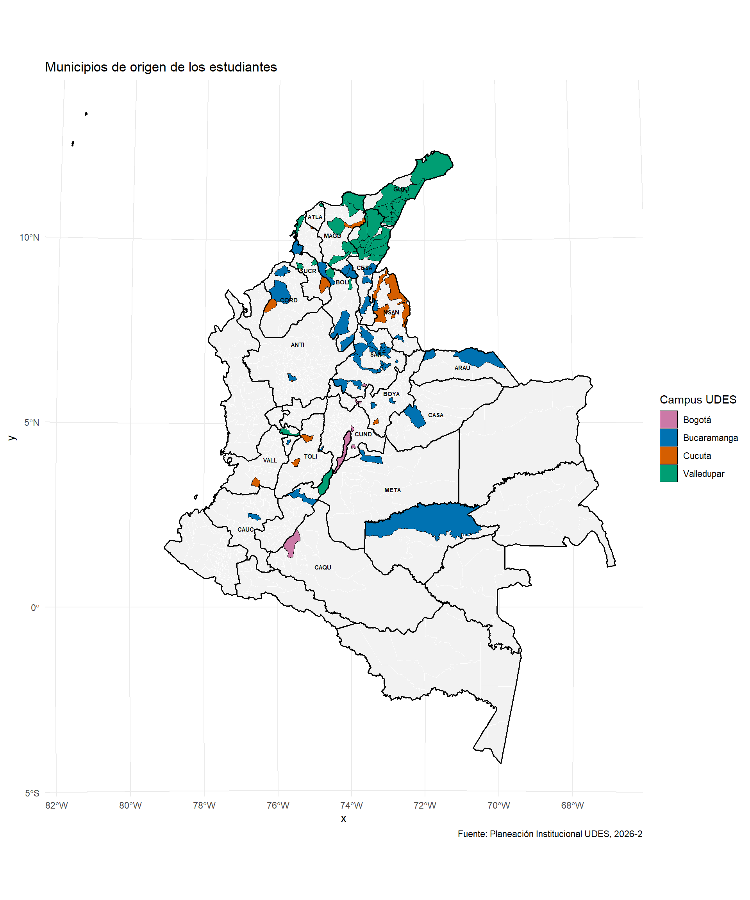

4 Sección 1. Información personal y Académica
4.1 Sección. Información personal y académica
Aclaración importante
En los gráficos y filtros, los campus se presentan como Bucaramanga, Cúcuta, Valledupar y Bogotá; esta última aparece como campus independiente.
4.2 Distribución geográfica
La distribución por departamentos y municipios de procedencia de los estudiantes se refleja en el mapa de Colombia.
4.3 Perfil Demográfico
4.3.1 Edad
Descripción para todos los campus
La mayor parte de los estudiantes de recien ingreso se concentra en edades jóvenes. En particular, los intervalos de 16 a 18 años (31.7%) y de 18 a 20 años (38.0%) reúnen el 69.7% de la población analizada, lo que evidencia que el acceso a la universidad se da principalmente en la etapa inmediatamente posterior al bachillerato. En contraste, a medida que aumenta la edad, la proporción de estudiantes disminuye de manera considerable, siendo reducida la participación de los grupos de 30 años en adelante.
Abreviaturas de programas académicos
ADFI: Administración Financiera, ADNI: Administración de Negocios Internacionales, BACT: Bacteriología y Laboratorio Clínico, COEX: Comercio Exterior, CONT: Contaduría Pública, COSP: Comunicación Social y Periodismo, DERE: Derecho, DIGR: Diseño Gráfico, ENFE: Enfermería, FISI: Fisioterapia, FONO: Fonoaudiología, GEOL: Geología, ICCI: Ingeniería en Ciencias de la Computación e Inteligencia Artificial, INAG: Ingeniería Agroindustrial, INAM: Ingeniería Ambiental, INBO: Instrumentación Quirúrgica (Bogotá), INCI: Ingeniería Civil, ININ: Ingeniería Industrial, INIV: Ingeniería Industrial - Virtual, INQU: Instrumentación Quirúrgica, INSI: Ingeniería de Sistemas, INSO: Ingeniería de Software, INSV: Ingeniería de Software - Virtual, LEIN: Licenciatura en Educación Infantil, MBIN: Microbiología Industrial, MEDI: Medicina, MEVE: Medicina Veterinaria, MVZC: Medicina Veterinaria y Zootecnia, MYPB: Mercadeo y Publicidad, PSIC: Psicología, TCGF: Tecnología en Comunicación Gráfica, TEOC: Terapia Ocupacional, TGLC: Tecnología en Gestión Logística del Comercio Exterior, TLAJ: Técnico Laboral en Auxiliar Judicial, TLCS: Técnico Laboral en Manejo de Herramientas para Codificación de Software, TLCV: Técnico Laboral por Competencias en Auxiliar de Clínica Veterinaria, TLME: Técnico Laboral en Mercaderista, TLPI: Técnico Laboral en Auxiliar de Educación para la Primera Infancia, TLRD: Técnico Laboral en Auxiliar de Servicios de Recreación y Deportes, TLSF: Técnico Laboral en Instalación y Mantenimiento de Sistemas Solares Fotovoltaicos, TSOC: Tecnología en Supervisión de Obras Civiles
4.3.2 Estado civil
Descripción para todos los campus
La gran mayoría de los estudiantes son solteros (94.4%). Los porcentajes de unión libre (3.1%) y de casados (2.4%) son reducidos entre los estudiantes de primer ingreso, mientras que los casos de divorcio representan apenas el 0.1%.
4.3.3 Sexo
Descripción para todos los campus
Se observa un predominio femenino en la matrícula, pues el 65.1% de los estudiantes son mujeres, frente al 34.9% de hombres. Esta diferencia evidencia una participación activa de las mujeres en el acceso a la educación superior y confirma su peso relevante dentro de la población de ingreso.
4.3.4 Pais de origen
Descripción para todos los campus
La respuesta “Colombia” concentra el 95.3% de los registros, seguida por “Venezuela” con 4.0%. Brasil y Estados Unidos registran 0.3% cada uno y Ecuador 0.1%. Las variantes de escritura de Colombia y las ciudades o departamentos colombianos digitados como país se agruparon en “Colombia”. En conjunto, el panorama confirma un origen predominantemente nacional, con presencia internacional limitada y una marcada influencia regional.
4.4 Dificultades
4.4.1 Habilidades académicas
Descripción para todos los campus
En las tres áreas evaluadas se evidencia una concentración en niveles medios de dificultad, lo que indica que, aunque los estudiantes alcanzan desempeños funcionales, persisten retos relevantes en el fortalecimiento de competencias clave.
En Matemáticas, predomina el nivel medio (54.9%), acompañado de una proporción importante en nivel alto (25.3%), lo que sugiere una base aceptable, pero con dificultades en el razonamiento y la resolución de problemas.
En Expresión Oral, el nivel medio (42.3%) continúa siendo el más representativo, seguido por un nivel alto (31.7%), evidenciando retos en la comunicación efectiva y la expresión de ideas.
Por su parte, Comprensión Lectora se consolida como el área más crítica, al concentrar el mayor porcentaje en nivel alto (43.7%), junto con un nivel medio significativo (34.2%), lo que refleja dificultades en la lectura crítica, el análisis y la interpretación de textos.
4.4.2 Habilidades cognitivas
Descripción para todos los campus
Los resultados evidencian que las principales dificultades cognitivas se concentran en memoria (34.4%), comprensión (29.8%), análisis (28.5%) y atención (26.6%), donde alrededor de 3 de cada 10 estudiantes reportan experimentar estas dificultades con alta frecuencia (“casi siempre”).
Estas capacidades están directamente asociadas con procesos clave del aprendizaje, como la interpretación de información, la concentración sostenida y la retención de contenidos, lo que sugiere un posible impacto en el desempeño académico.
Por su parte, la adaptación (23.2%) presenta una menor incidencia relativa, aunque continúa siendo relevante, indicando que cerca de 1 de cada 4 estudiantes enfrenta dificultades para ajustarse a nuevas dinámicas académicas.
4.5 Desempeño académico en el colegio
Descripción para todos los campus
El perfil académico previo de los estudiantes en su mayoria es favorable, con una alta concentración en niveles positivos: 67.0% lo califica como bueno y 26.7% como excelente, lo que indica que el 93.7% ingresa con una percepción positiva de su desempeño académico. Sin embargo, un 5.8% se ubica en nivel regular y una proporción mínima en nivel bajo (0.4%), lo que, aunque reducido, evidencia la existencia de un grupo que podría enfrentar mayores dificultades en su proceso de adaptación académica.
4.6 Lenguas extranjeras
Descripción para todos los campus
En relación con el dominio de lenguas extranjeras, el 18.5% de los estudiantes manifiesta contar con esta competencia, mientras que una amplia mayoría (81.5%) indica no poseerla. En cuanto a la certificación formal, entre quienes reportan esta información, el 41.4% indica contar con algún tipo de certificación, frente a un 58.6% que no dispone de este respaldo. Este hallazgo sugiere que, aunque el dominio declarado de una lengua extranjera es limitado, el acceso a certificaciones formales sigue siendo minoritario.
4.6.1 Distribución de niveles de idiomas
Descripción para todos los campus
La distribución de niveles de competencia en lenguas extranjeras evidencia un claro predominio del inglés, que concentra el 7.5% del total de estudiantes. Dentro de este idioma, el nivel más frecuente es B2, seguido por B1, lo que indica que la competencia reportada se ubica principalmente en rangos intermedios y en una proporción reducida de la muestra.
En contraste, otros idiomas como francés (0.4%) y portugués (0.4%), así como alemán (0.3%), italiano (0.3%) y otras lenguas (0.3%), presentan una participación marginal, concentrada principalmente en niveles básicos (A1 y A2).
En conjunto, estos resultados reflejan una baja diversificación lingüística y una limitada presencia de niveles avanzados (C1 y C2), lo que sugiere la necesidad de fortalecer las competencias en segunda lengua como parte del perfil de ingreso y permanencia estudiantil.
| Idioma | A1 | A2 | B1 | B2 | C1 | C2 | Total | Porcentaje |
|---|---|---|---|---|---|---|---|---|
| Inglés | 1 | 4 | 24 | 27 | 0 | 0 | 56 | 7.4% |
| Francés | 1 | 1 | 1 | 0 | 0 | 0 | 3 | 0.4% |
| Portugués | 1 | 1 | 1 | 0 | 0 | 0 | 3 | 0.4% |
| Alemán | 2 | 0 | 0 | 0 | 0 | 0 | 2 | 0.3% |
| Italiano | 1 | 1 | 0 | 0 | 0 | 0 | 2 | 0.3% |
| Otra | 2 | 0 | 1 | 0 | 0 | 0 | 3 | 0.4% |